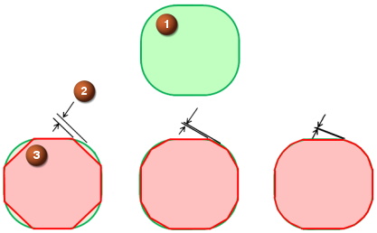
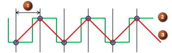
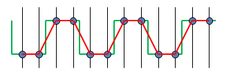
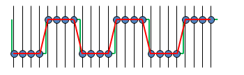

IPW tolerance settings consolidated
What is it?
NX uses approximated facet geometry for the In-process workpiece (IPW), gouge detection, and collision detection. The tolerance settings that control the accuracy of facet geometry are now consolidated.
To control IPW accuracy, use the following customer defaults:
-
Specify a Chordal Tolerance value to control the accuracy required for approximating a curve or circle.
-
Choose either Needle Distance or Needle Count to control the grid used to calculate the IPW.
-
Needle Distance specifies how far apart to space the grid needles in the X, Y, and Z directions.
-
Needle Count specifies the total number of needles in a volume.
Caution
Do not modify the default Needle Count values for Coarse, Medium, and Fine unless you are directed to do so by technical support.
-
Chordal tolerance effect on the facets
As the chordal distance decreases, the facet geometry approximation becomes more accurate. The computation time required to create the facet geometry increases with accuracy. You control whether your results are faster or more accurate.

1: Original geometry shape
2: Chordal tolerance
3: Approximated shape for facets
Needle Distance effect on the facets
As the needle distance decreases, the facet geometry approximation becomes more accurate.
The computation time required to create the facet geometry increases with:
-
Part size
A larger part requires more needles, and more calculations.
-
Accuracy
A shorter needle distance requires more needles and more calculations.



1: Needle distance
2: Original geometry shape
3: Approximated shape for facets
The new Maximum Needle Count option restricts the grid size and memory requirements for IPW calculations. Restricting the grid size prevents memory problems that can result from a small needle distance applied to large part geometry.
Why should I use it?
The consolidated options make it easier to adjust the tolerance settings so that they are:
-
Large enough to maximize the calculation performance.
-
Small enough to create approximated geometry with reasonably sized facets.
Where do I find it?
Customer Defaults
|
Application |
Manufacturing |
|
Menu |
File→Utilities→Customer Defaults |
|
Location in dialog box |
Customer Defaults dialog box→Manufacturing→Simulation & Visualization: (Chordal Tolerance and needle control for IPW facets) IPW tab (Chordal tolerance for gouge checking) Gouge tab (Faceting Tolerance for Collision Detection) ISV tab |
(Chordal Tolerance for machine simulation)
|
Toolbar |
Operations toolbar→Simulate Machine |
|
Location in dialog box |
Simulation Control Panel dialog box→Simulation Settings group→Options |